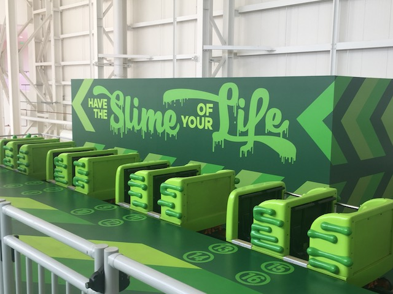

| |
Nickelodeon Slime Streak Review

We're here at Nickelodeon Universe (American Dream). Today's coaster we'll be reviewing is Nickelodeon Slime Streak. This is the parks meandering family coaster, and functions similarly to Pepsi Orange Streak and Jaguar. Except for the fact that both of those rides are FAR BETTER!!! Yeah, I may not be a big fan of either, but both EASILY kick this rides ass, which was FAR more dissapointing than I was expecting. How so? Well, let's hop in the cars. And here, we come to our first problem. The cars on this ride. They are PATHETICLY SMALL!!! The cars on this ride essentially are kiddy coaster trains. Yeah. I know on a lot of kiddy coaster trains, it's a tight squeeze for most adults. But you know what? It's a kiddy coaster. It wasn't designed for you in mind. You're literally credit whoring. So just shut up, squeeze in, and cha-ching! And this doesn't even factor in the kiddy coasters with large comfy roomy trains. THIS RIDE HAS NO F*CKING EXCUSE AS A FAMILY COASTER!!! AMERICAN DREAM!!! GET BETTER TRAINS FOR THIS RIDE!!! SERIOUSLY!!! Anyways, we're squeezed into the cars, and we're off. We roll around a turn and start heading up the lifthill. Not much of a view. Just climbing up to the ceiling. We reach the top, get a good look at Nickeloden Universe, including Shredder, TMNT Shellraiser, and the big collage of Nickelodeon Characters, and then we drop. It's a curved drop. There's not a lot of laterals here. But....in these trains, you don't want laterals, as that'd just hurt you (I can't get over just how much I HATE these f*cking trains). We then head up a small hill. Fun, but yeah. No airtime. But that's to be expected in a big long meandering family coaster. We then go through another small hill, go through some straight track, and into another small hill, heading right towards Sandy's Blasting Bronco. We then head through a big turnaround. The laterals aren't too strong here, but there's some here. So it's not completely forceless (But I HATE THESE F*CKING TRAINS!!!). We head towards a small hill, and....POOF!!! We pass a sign that says "POOF!!!". Probably because we're passing right above Timmy's Half-Pipe Havoc, which is themed to the Fairly Odd Parents (Fairly Odd Parents Half-Pipe > Fairly Odd Parents Spinner). I wish for this hill to have some airtime! *wand flop sound* Sorry Kevin, but according to the rules, family coasters aren't allowed to have airtime. >=( We then head through another turn and meander some more, and....BACK INTO THE STATION!!! WHAT!!? IT'S OVER!!? SON OF A BITCH!! Well, technically not. They send you around twice to make up for the short length. So I guess this was done on a budget. I know it's actually a custom Chance Big Dipper. And...comparing this to the other one I rode, this is a lot better. However, THAT'S A F*CKING KIDDY COASTER!! Maybe I'm the one being unreasonable and unfair by judging it as a family coaster instead of a kiddy coaster. Because if I were to truly treat this as a kiddy coaster and rank it like one, I'd first stop bitching about the trains since....yeah. Kiddy Coasters get a pass on small uncomfortable train complaints. And this would really be amongst the highest ranked kiddy coasters (I keep joking that I'm going to make a Top 10 Kiddy Coasters List. But honestly, I probably unironically will as soon as I'm not drowning in work and caught up on the site lol) and I'd definately be a lot more favorable to it. But as a family coaster, this REALLY fails. Come on Nickelodeon Slime Streak. Either own up to being a kiddy coaster, or step up your game. I suppose its worth a ride. I guess your thoughts on the ride will depend on whether you view this ride as a kiddy coaster or a family coaster, as....this probably is the official border between kiddy coaster and family coaster.
4/10
Location: Nickelodeon Universe (American Dream)
Opened: 2019
Built by: Chance Rides
Last Ridden: June 15, 2021
Nickelodeon Slime Streak Photos





Home
|